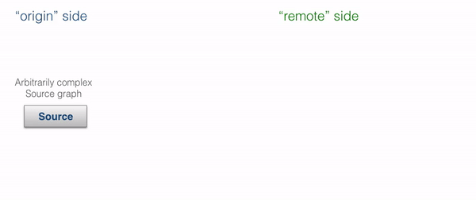
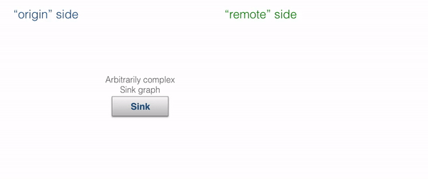

StreamRefs - Reactive Streams over the network
Dependency
To use Akka Streams, add the module to your project:
- sbt
libraryDependencies += "com.typesafe.akka" %% "akka-stream" % "2.5-SNAPSHOT"- Maven
<dependency> <groupId>com.typesafe.akka</groupId> <artifactId>akka-stream_2.12</artifactId> <version>2.5-SNAPSHOT</version> </dependency>- Gradle
dependencies { compile group: 'com.typesafe.akka', name: 'akka-stream_2.12', version: '2.5-SNAPSHOT' }
Introduction
This module is currently marked as may change in the sense of being the subject of final development. This means that the API or semantics can change without warning or deprecation period, and it is not recommended to use this module in production just yet.
Stream references, or “stream refs” for short, allow running Akka Streams across multiple nodes within an Akka Cluster.
Unlike heavier “streaming data processing” frameworks, Akka Streams are neither “deployed” nor automatically distributed. Akka stream refs are, as the name implies, references to existing parts of a stream, and can be used to create a distributed processing framework or to introduce such capabilities in specific parts of your application.
Stream refs are trivial to use in existing clustered Akka applications and require no additional configuration or setup. They automatically maintain flow-control / back-pressure over the network and employ Akka’s failure detection mechanisms to fail-fast (“let it crash!”) in the case of failures of remote nodes. They can be seen as an implementation of the Work Pulling Pattern, which one would otherwise implement manually.
A useful way to think about stream refs is: “like an ActorRef, but for Akka Streams’s Source and Sink”.
Stream refs refer to an already existing, possibly remote, Sink or Source. This is not to be mistaken with deploying streams remotely, which this feature is not intended for.
Use stream refs with Akka Cluster. The failure detector can cause quarantining if plain Akka remoting is used.
Stream References
The prime use case for stream refs is to replace raw actor or HTTP messaging in systems that expect long-running streams of data between two entities. Often they can be used to effectively achieve point-to-point streaming without the need to set up additional message brokers or similar secondary clusters.
Stream refs are well-suited for any system in which you need to send messages between nodes in a flow-controlled fashion. Typical examples include sending work requests to worker nodes as fast as possible, but not faster than the worker nodes can process them, or sending data elements that the downstream may be slow at processing. It is recommended to mix and introduce stream refs in actor-messaging-based systems, where the actor messaging is used to orchestrate and prepare such message flows, and later the stream refs are used to do the flow-controlled message transfer.
Stream refs are not persistent. However, it is simple to build a resumable stream by introducing such a protocol in the actor messaging layer. Stream refs are absolutely expected to be sent over Akka remoting to other nodes within a cluster using Akka Cluster, and therefore complement, instead of compete, with plain Actor messaging. Actors would usually be used to establish the stream via some initial message saying, “I want to offer you many log elements (the stream ref),” or conversely, “if you need to send me much data, here is the stream ref you can use to do so”.
Since the two sides (“local” and “remote”) of each reference may be confusing to refer to as “remote” and “local” – since either side can be seen as “local” or “remote” depending how we look at it – we propose using the terminology “origin” and “target”, which is defined by where the stream ref was created. For SourceRefs, the “origin” is the side which has the data that it is going to stream out. For SinkRefs, the “origin” side is the actor system that is ready to receive the data and has allocated the ref. Those two may be seen as duals of each other. However, to explain patterns about sharing references, we found this wording to be rather useful.
Source Refs - offering streaming data to a remote system
A SourceRefSourceRef can be offered to a remote actor system in order for it to consume some source of data that we have prepared locally.
In order to share a Source with a remote endpoint you need to materialize it by running it into the Sink.sourceRef. That Sink materializes the SourceRef that you can then send to other nodes. Please note that it materializes into a Future so you will have to use pipeTo.
- Scala
-
import akka.stream.SourceRef import akka.pattern.pipe case class RequestLogs(streamId: Int) case class LogsOffer(streamId: Int, sourceRef: SourceRef[String]) class DataSource extends Actor { import context.dispatcher implicit val mat = ActorMaterializer()(context) def receive = { case RequestLogs(streamId) ⇒ // obtain the source you want to offer: val source: Source[String, NotUsed] = streamLogs(streamId) // materialize the SourceRef: val ref: Future[SourceRef[String]] = source.runWith(StreamRefs.sourceRef()) // wrap the SourceRef in some domain message, such that the sender knows what source it is val reply: Future[LogsOffer] = ref.map(LogsOffer(streamId, _)) // reply to sender reply pipeTo sender() } def streamLogs(streamId: Long): Source[String, NotUsed] = ??? } - Java
-
static class RequestLogs { public final long streamId; public RequestLogs(long streamId) { this.streamId = streamId; } } static class LogsOffer { final SourceRef<String> sourceRef; public LogsOffer(SourceRef<String> sourceRef) { this.sourceRef = sourceRef; } } static class DataSource extends AbstractActor { @Override public Receive createReceive() { return receiveBuilder().match(RequestLogs.class, this::handleRequestLogs).build(); } private void handleRequestLogs(RequestLogs requestLogs) { Source<String, NotUsed> logs = streamLogs(requestLogs.streamId); CompletionStage<SourceRef<String>> logsRef = logs.runWith(StreamRefs.sourceRef(), mat); Patterns.pipe(logsRef.thenApply(ref -> new LogsOffer(ref)), context().dispatcher()) .to(sender()); } private Source<String, NotUsed> streamLogs(long streamId) { return Source.repeat("[INFO] some interesting logs here (for id: " + streamId + ")"); } }
The origin actor which creates and owns the Source could also perform some validation or additional setup when preparing the Source. Once it has handed out the SourceRef, the remote side can run it like this:
- Scala
-
val sourceActor = system.actorOf(Props[DataSource], "dataSource") sourceActor ! RequestLogs(1337) val offer = expectMsgType[LogsOffer] // implicitly converted to a Source: offer.sourceRef.runWith(Sink.foreach(println)) // alternatively explicitly obtain Source from SourceRef: // offer.sourceRef.source.runWith(Sink.foreach(println)) - Java
-
ActorRef sourceActor = system.actorOf(Props.create(DataSource.class), "dataSource"); sourceActor.tell(new RequestLogs(1337), getTestActor()); LogsOffer offer = expectMsgClass(LogsOffer.class); offer.sourceRef.getSource().runWith(Sink.foreach(log -> System.out.println(log)), mat);
The process of preparing and running a SourceRef-powered distributed stream is shown by the animation below:

A SourceRef is by design “single-shot”; i.e., it may only be materialized once. This is in order to not complicate the mental model of what materialization means.
Multicast can be mimicked by starting a BroadcastHub operator once, then attaching multiple new streams to it, each emitting a new stream ref. This way, materialization of the BroadcastHubs Source creates a unique single-shot stream ref, however they can all be powered using a single Source – located before the BroadcastHub operator.
Sink Refs - offering to receive streaming data from a remote system
The dual of SourceRefSourceRefs.
They can be used to offer the other side the capability to send to the origin side data in a streaming, flow-controlled fashion. The origin here allocates a Sink, which could be as simple as a Sink.foreach or as advanced as a complex Sink which streams the incoming data into various other systems (e.g., any of the Alpakka-provided Sinks).
To form a good mental model of SinkRefs, you can think of them as being similar to “passive mode” in FTP.
- Scala
-
import akka.pattern.pipe import akka.stream.SinkRef case class PrepareUpload(id: String) case class MeasurementsSinkReady(id: String, sinkRef: SinkRef[String]) class DataReceiver extends Actor { import context.dispatcher implicit val mat = ActorMaterializer()(context) def receive = { case PrepareUpload(nodeId) ⇒ // obtain the source you want to offer: val sink: Sink[String, NotUsed] = logsSinkFor(nodeId) // materialize the SinkRef (the remote is like a source of data for us): val ref: Future[SinkRef[String]] = StreamRefs.sinkRef[String]().to(sink).run() // wrap the SinkRef in some domain message, such that the sender knows what source it is val reply: Future[MeasurementsSinkReady] = ref.map(MeasurementsSinkReady(nodeId, _)) // reply to sender reply pipeTo sender() } def logsSinkFor(nodeId: String): Sink[String, NotUsed] = ??? } - Java
-
static class PrepareUpload { final String id; public PrepareUpload(String id) { this.id = id; } } static class MeasurementsSinkReady { final String id; final SinkRef<String> sinkRef; public MeasurementsSinkReady(String id, SinkRef<String> ref) { this.id = id; this.sinkRef = ref; } } static class DataReceiver extends AbstractActor { @Override public Receive createReceive() { return receiveBuilder() .match( PrepareUpload.class, prepare -> { Sink<String, NotUsed> sink = logsSinkFor(prepare.id); CompletionStage<SinkRef<String>> sinkRef = StreamRefs.<String>sinkRef().to(sink).run(mat); Patterns.pipe( sinkRef.thenApply(ref -> new MeasurementsSinkReady(prepare.id, ref)), context().dispatcher()) .to(sender()); }) .build(); } private Sink<String, NotUsed> logsSinkFor(String id) { return Sink.<String>ignore().mapMaterializedValue(done -> NotUsed.getInstance()); } }
Using the offered SinkRef to send data to the origin of the Sink is also simple, as we can treat the SinkRef as any other Sink and directly runWith or run with it.
- Scala
-
val receiver = system.actorOf(Props[DataReceiver], "receiver") receiver ! PrepareUpload("system-42-tmp") val ready = expectMsgType[MeasurementsSinkReady] // stream local metrics to Sink's origin: localMetrics().runWith(ready.sinkRef) - Java
-
ActorRef receiver = system.actorOf(Props.create(DataReceiver.class), "dataReceiver"); receiver.tell(new PrepareUpload("system-42-tmp"), getTestActor()); MeasurementsSinkReady ready = expectMsgClass(MeasurementsSinkReady.class); Source.repeat("hello").runWith(ready.sinkRef.getSink(), mat);
The process of preparing and running a SinkRef-powered distributed stream is shown by the animation below:

A SinkRef is by design “single-shot”; i.e., it may only be materialized once. This is in order to not complicate the mental model of what materialization means.
If you have a use case for building a fan-in operation that accepts writes from multiple remote nodes, you can build your Sink and prepend it with a MergeHub operator, each time materializing a new SinkRef targeting that MergeHub. This has the added benefit of giving you full control of how to merge these streams (i.e., by using “merge preferred” or any other variation of the fan-in operators).
Delivery guarantees
Stream refs utilise normal actor messaging for their trainsport, and therefore provide the same level of basic delivery guarantees. Stream refs do extend the semantics somewhat, through demand re-delivery and sequence fault detection. In other words:
- messages are sent over actor remoting
- which relies on TCP (classic remoting or Artery TCP) or Aeron UDP for basic redelivery mechanisms
- messages are guaranteed to to be in-order
- messages can be lost, however:
- a dropped demand signal will be re-delivered automatically (similar to system messages)
- a dropped element signal will cause the stream to fail
Bulk Stream References
Bulk stream references are not implemented yet. See ticket Bulk Transfer Stream Refs #24276 to track progress or signal demand for this feature.
Bulk stream refs can be used to create simple side-channels to transfer humongous amounts of data such as huge log files, messages or even media, with as much ease as if it was a trivial local stream.
Configuration
Stream reference subscription timeouts
All stream references have a subscription timeout, which is intended to prevent resource leaks in case a remote node requests the allocation of many streams but never actually runs them. In order to prevent this, each stream reference has a default timeout (of 30 seconds), after which the origin will abort the stream offer if the target has not materialized the stream ref. After the timeout has triggered, materialization of the target side will fail, pointing out that the origin is missing.
Since these timeouts are often very different based on the kind of stream offered, and there can be many different kinds of them in the same application, it is possible to not only configure this setting globally (akka.stream.materializer.stream-ref.subscription-timeout), but also via attributes:
- Scala
-
// configure the timeout for source import scala.concurrent.duration._ import akka.stream.StreamRefAttributes // configuring Sink.sourceRef (notice that we apply the attributes to the Sink!): Source.repeat("hello") .runWith(StreamRefs.sourceRef().addAttributes(StreamRefAttributes.subscriptionTimeout(5.seconds))) // configuring SinkRef.source: StreamRefs.sinkRef().addAttributes(StreamRefAttributes.subscriptionTimeout(5.seconds)) .runWith(Sink.ignore) // not very interesting Sink, just an example - Java
-
FiniteDuration timeout = FiniteDuration.create(5, TimeUnit.SECONDS); Attributes timeoutAttributes = StreamRefAttributes.subscriptionTimeout(timeout); // configuring Sink.sourceRef (notice that we apply the attributes to the Sink!): Source.repeat("hello") .runWith(StreamRefs.<String>sourceRef().addAttributes(timeoutAttributes), mat); // configuring SinkRef.source: StreamRefs.<String>sinkRef() .addAttributes(timeoutAttributes) .runWith(Sink.<String>ignore(), mat); // not very interesting sink, just an example
General configuration
Other settings can be set globally in your application.conf, by overriding any of the following values in the akka.stream.materializer.stream-ref.* keyspace:
# configure defaults for SourceRef and SinkRef
stream-ref {
# Buffer of a SinkRef that is used to batch Request elements from the other side of the stream ref
#
# The buffer will be attempted to be filled eagerly even while the local stage did not request elements,
# because the delay of requesting over network boundaries is much higher.
buffer-capacity = 32
# Demand is signalled by sending a cumulative demand message ("requesting messages until the n-th sequence number)
# Using a cumulative demand model allows us to re-deliver the demand message in case of message loss (which should
# be very rare in any case, yet possible -- mostly under connection break-down and re-establishment).
#
# The semantics of handling and updating the demand however are in-line with what Reactive Streams dictates.
#
# In normal operation, demand is signalled in response to arriving elements, however if no new elements arrive
# within `demand-redelivery-interval` a re-delivery of the demand will be triggered, assuming that it may have gotten lost.
demand-redelivery-interval = 1 second
# Subscription timeout, during which the "remote side" MUST subscribe (materialize) the handed out stream ref.
# This timeout does not have to be very low in normal situations, since the remote side may also need to
# prepare things before it is ready to materialize the reference. However the timeout is needed to avoid leaking
# in-active streams which are never subscribed to.
subscription-timeout = 30 seconds
# In order to guard the receiving end of a stream ref from never terminating (since awaiting a Completion or Failed
# message) after / before a Terminated is seen, a special timeout is applied once Terminated is received by it.
# This allows us to terminate stream refs that have been targeted to other nodes which are Downed, and as such the
# other side of the stream ref would never send the "final" terminal message.
#
# The timeout specifically means the time between the Terminated signal being received and when the local SourceRef
# determines to fail itself, assuming there was message loss or a complete partition of the completion signal.
final-termination-signal-deadline = 2 seconds
}